Chapter 10 Diagnostics and Transformations
library(ggfortify) # for autoplot for lm objects
library(emmeans) # emmeans for pairwise constrasts.
library(tidyverse) # for dplyr, tidyr, ggplot2We will be interested in analyzing whether or not our linear model is a good model and whether or not the data violate any of the assumptions that are required. In general we will be interested in three classes of assumption violations and our diagnostic measures might be able detect one or more of the following issues:
Unusual observations that contribute too much influence to the analysis. These few observations might drastically change the outcome of the model.
Model misspecification. Our assumption that \(E\left[\boldsymbol{y}\right]=\boldsymbol{X}\boldsymbol{\beta}\) might be wrong and we might need to include different covariates in the model to get a satisfactory result.
Error distribution. We have assumed that \(\epsilon_i \stackrel{iid}{\sim} N\left(0,\sigma^{2}\right)\) but autocorrelation, heteroscedasticity, and non-normality might be present.
Often problems with one of these can be corrected by transforming either the explanatory or response variables.
10.1 Detecting Assumption Violations
Throughout this chapter I will use data created by Francis Anscombe that show how simple linear regression can be misused. In particular, these data sets will show how our diagnostic measures will detect various departures from the model assumptions.
The data are available in R as a data frame anscombe and is loaded by default. The data consists of four datasets, each having the same linear regression \(\hat{y}=3+0.5\,x\) but the data are drastically different.
# The anscombe dataset has 8 columns - x1,x2,x3,x4,y1,y2,y3,y4
# and I want it to have 3 columns - Set, X, Y
Anscombe <- rbind(
data.frame(x=anscombe$x1, y=anscombe$y1, set='Set 1'),
data.frame(x=anscombe$x2, y=anscombe$y2, set='Set 2'),
data.frame(x=anscombe$x3, y=anscombe$y3, set='Set 3'),
data.frame(x=anscombe$x4, y=anscombe$y4, set='Set 4'))
# order them by their x values, and add an index column
Anscombe <- Anscombe %>%
group_by(set) %>% # Every subsequent action happens by dataset
arrange(x,y) %>% # sort them on the x-values and if tied, by y-value
mutate( index = 1:n() ) # give each observation within a set, an ID number
# Make a nice graph
ggplot(Anscombe, aes(x=x, y=y)) +
geom_point() +
facet_wrap(~set, scales='free') +
stat_smooth(method="lm", formula=y~x, se=FALSE)
10.1.1 Measures of Influence
10.1.1.1 Standardized Residuals (aka Studentized )
Recall that we have
\[\begin{aligned}\hat{\boldsymbol{y}} &= \boldsymbol{X}\hat{\boldsymbol{\beta}}\\ &= \boldsymbol{X}\left(\boldsymbol{X}^{T}\boldsymbol{X}\right)^{-1}\boldsymbol{X}^{T}\boldsymbol{y}\\ &= \boldsymbol{H}\boldsymbol{y}\\ \end{aligned}\]
where the “Hat Matrix” is \(\boldsymbol{H}=\boldsymbol{X}\left(\boldsymbol{X}^{T}\boldsymbol{X}\right)^{-1}\boldsymbol{X}^{T}\) because we have \(\hat{\boldsymbol{y}}=\boldsymbol{H}\boldsymbol{y}\). The elements of \(\boldsymbol{H}\) can be quite useful in diagnostics. It can be shown that the variance of the \(i\)the residual is \[Var\left(\hat{\epsilon}_{i}\right)=\sigma^{2}\left(1-\boldsymbol{H}_{ii}\right)\] where \(\boldsymbol{H}_{ii}\) is the \(i\)th element of the main diagonal of \(\boldsymbol{H}\). This suggests that I could rescale my residuals to \[\hat{\epsilon}_{i}^{*}=\frac{\hat{\epsilon}_{i}}{\hat{\sigma}\sqrt{1-\boldsymbol{H}_{ii}}}\] which, if the normality and homoscedasticity assumptions hold, should behave as a \(N\left(0,1\right)\) sample.
These rescaled residuals are called “studentized residuals”, though R typically refers to them as “standardized”. Since we have a good intuition about the scale of a standard normal distribution, the scale of standardized residuals will give a good indicator if normality is violated.
There are actually two types of studentized residuals, typically called internal and external among statisticians. The version presented above is the internal version which can be obtained using the R function rstandard() while the external version is available using rstudent(). Whenever you see R present standardized residuals, they are talking about internally studentized residuals. For sake of clarity, I will use the term standardized as well.
10.1.1.1.1 Example - Anscombe’s set 3
For the third dataset, the outlier is the ninth observation with \(x_{9}=13\) and \(y_{9}=12.74\). We calculate the standardized residuals using the function rstandard() and plot them
Set3 <- Anscombe %>% filter(set == 'Set 3') # Just set 3
model <- lm(y ~ x, data=Set3) # Fit the regression line
Set3$stdresid <- rstandard(model) # rstandard() returns the standardized residuals
ggplot(Set3, aes(x=index, y=stdresid)) + # make a plot
geom_point() +
labs(x='Observation Index',
y='Standardized Residuals',
title='Standardized Residuals vs Observation Index')
and we notice that the outlier residual is really big. If the model assumptions were true, then the standardized residuals should follow a standard normal distribution, and I would need to have hundreds of observations before I wouldn’t be surprised to see a residual more than 3 standard deviations from 0.
10.1.1.2 Leverage
The extremely large standardized residual suggests that this data point is important, but we would like to quantify how important this observation actually is.
One way to quantify this is to look at the elements of \(\boldsymbol{H}\). Because \[\hat{y}_{i}=\sum_{j=1}^{n}\boldsymbol{H}_{ij}y_{j}\] then the \(i\)th row of \(\boldsymbol{H}\) is a vector of weights that tell us how influential a point \(y_{j}\) is for calculating the predicted value \(\hat{y}_{i}\). If I look at just the main diagonal of \(\boldsymbol{H}\), these are how much weight a point has on its predicted value. As such, I can think of the \(\boldsymbol{H}_{ii}\) as the amount of leverage a particular data point has on the regression line. It can be shown that the leverages must be \(0 \le \boldsymbol{H}_{ii} \le 1\) and that \(\sum \boldsymbol{H}_{ii} = p\).
Fortunately there is already a function hatvalues() to compute these \(\boldsymbol{H}_{ii}\) values for me. We will compare the leverages from Anscombe’s set 3 versus set 4.
Set3 <- Anscombe %>% filter( set == 'Set 3')
Set4 <- Anscombe %>% filter( set == 'Set 4')
model3 <- lm(y ~ x, data = Set3 )
model4 <- lm(y ~ x, data = Set4 )
Set3 <- Set3 %>% mutate(leverage = hatvalues(model3)) # add leverage columns
Set4 <- Set4 %>% mutate(leverage = hatvalues(model4))
ggplot( rbind(Set3,Set4), aes(x=index, y=leverage) ) +
geom_point() +
facet_grid( . ~ set )
This leverage idea only picks out the potential for a specific value of \(x\) to be influential, but does not actually measure influence. It has picked out the issue with the fourth data set, but does not adequately address the outlier in set 3.
10.1.1.3 Cook’s Distance
To attempt to measure the actual influence of an observation \(\left\{ y_{i},\boldsymbol{x}_{i}^{T}\right\}\) on the linear model, we consider the effect on the regression if we removed the observation and fit the same model. Let \[\hat{\boldsymbol{y}}=\boldsymbol{X}\hat{\boldsymbol{\beta}}\] be the vector of predicted values, where \(\hat{\boldsymbol{\beta}}\) is created using all of the data, and \(\hat{\boldsymbol{y}}_{(i)}=\boldsymbol{X}\hat{\boldsymbol{\beta}}_{(i)}\) be the vector of predicted values where \(\hat{\boldsymbol{\beta}}_{(i)}\) was estimated using all of the data except the \(i\)th observation. Letting \(p\) be the number of \(\beta_{j}\) parameters as usual we define Cook’s distance of the \(i\)th observation as \[ D_{i} = \frac{\left(\hat{\boldsymbol{y}}-\hat{\boldsymbol{y}}_{(i)}\right)^{T}\left(\hat{\boldsymbol{y}}-\hat{\boldsymbol{y}}_{(i)}\right)}{p\hat{\sigma}^{2}}\] which boils down to saying if the predicted values have large changes when the \(i\)th element is removed, then the distance is big. It can be shown that this formula can be simplified to \[D_{i}=\frac{\hat{\epsilon}_{i}^{*}\boldsymbol{H}_{ii}}{p\left(1-H_{ii}\right)}\] which expresses Cook’s distance in terms of the \(i\)th studentized residual and the \(i\)th leverage.
Nicely, the R function cooks.distance() will calculate Cook’s distance.
Set3 <- Set3 %>% mutate(cooksd = cooks.distance(model3))
Set4 <- Set4 %>% mutate(cooksd = cooks.distance(model4))
# Note: The high leverage point in set 4 has a Cook's distance of Infinity.
ggplot(rbind(Set3,Set4), aes(x=index, y=cooksd)) +
geom_point() +
facet_grid(. ~ set) +
labs(y="Cook's Distance")## Warning: Removed 1 rows containing missing values (geom_point).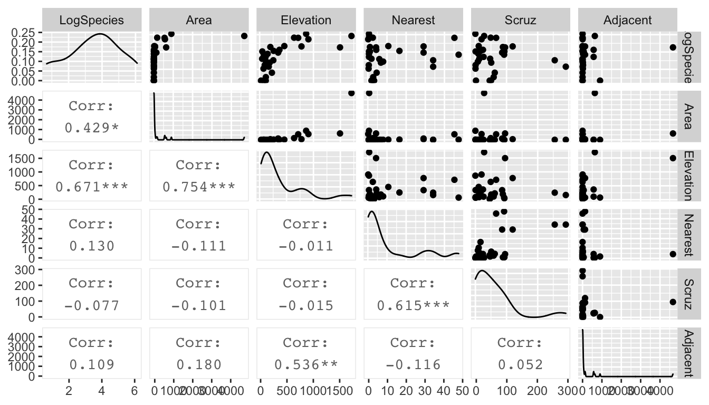
Some texts will give a rule of thumb that points with Cook’s distances greater than 1 should be considered influential, while other books claim a reasonable rule of thumb is \(4/\left(n-p-1\right)\) where \(n\) is the sample size, and \(p\) is the number of parameters in \(\boldsymbol{\beta}\). My take on this, is that you should look for values that are highly different from the rest of your data.
10.1.2 Diagnostic Plots
After fitting a linear model in R, you have the option of looking at diagnostic plots that help to decide if any assumptions are being violated. We will step through each of the plots that are generated by the function plot(model) or using ggplot2 using the package ggfortify.
In the package ggfortify there is a function that will calculate the diagnostics measures and add them to your dataset. This will simplify our graphing process.
Set1 <- Anscombe %>% filter(set == 'Set 1')
model <- lm( y ~ x, data=Set1)
Set1 <- fortify(model) # add dignostic measures to the dataset
Set1 %>% round(digits=3) # show the dataset nicely## y x .hat .sigma .cooksd .fitted .resid .stdresid
## 1 4.26 4 0.318 1.273 0.123 5.000 -0.740 -0.725
## 2 5.68 5 0.236 1.310 0.004 5.501 0.179 0.166
## 3 7.24 6 0.173 1.220 0.127 6.001 1.239 1.102
## 4 4.82 7 0.127 1.147 0.154 6.501 -1.681 -1.455
## 5 6.95 8 0.100 1.311 0.000 7.001 -0.051 -0.043
## 6 8.81 9 0.091 1.218 0.062 7.501 1.309 1.110
## 7 8.04 10 0.100 1.312 0.000 8.001 0.039 0.033
## 8 8.33 11 0.127 1.310 0.002 8.501 -0.171 -0.148
## 9 10.84 12 0.173 1.100 0.279 9.001 1.839 1.635
## 10 7.58 13 0.236 1.056 0.489 9.501 -1.921 -1.778
## 11 9.96 14 0.318 1.311 0.000 10.001 -0.041 -0.04110.1.2.1 Residuals vs Fitted
In the simple linear regression the most useful plot to look at was the residuals versus the \(x\)-covariate, but we also saw that this was similar to looking at the residuals versus the fitted values. In the general linear model, we will look at the residuals versus the fitted values or possibly the studentized residuals versus the fitted values.
10.1.2.1.1 Polynomial relationships
To explore how this plot can detect non-linear relationships between \(y\) and \(x\), we will examine a data set from Ashton et al. (2007) that relates the length of a tortoise’s carapace to the number of eggs laid in a clutch. The data are
Eggs <- data.frame(
carapace = c(284,290,290,290,298,299,302,306,306,
309,310,311,317,317,320,323,334,334),
clutch.size = c(3,2,7,7,11,12,10,8,8,
9,10,13,7,9,6,13,2,8))
ggplot(Eggs, aes(x=carapace, y=clutch.size)) +
geom_point()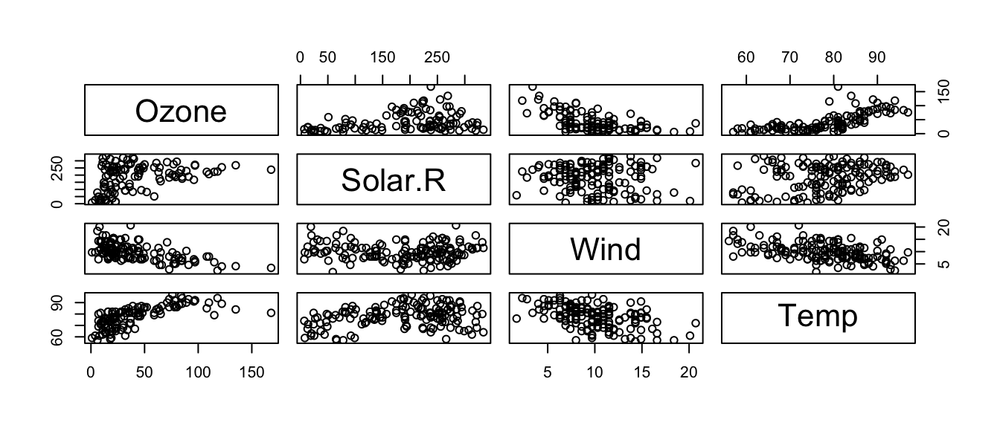
Looking at the data, it seems that we are violating the assumption that a linear model is appropriate, but we will fit the model anyway and look at the residual graph.
model <- lm( clutch.size ~ carapace, data=Eggs )
plot(model, which=1) # which=1 tells R to only make the first plot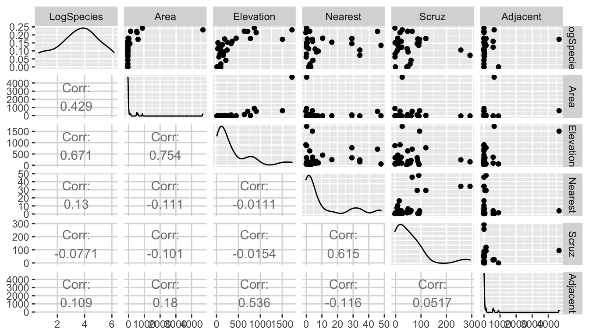
library(ggfortify) # need the ggfortify library for autoplot.lm() to work
autoplot(model, which=1) # same plot using ggplot2
The red/blue lines going through the plot is a smoother of the residuals. Ideally this should be a flat line and I should see no trend in this plot. Clearly there is a quadratic trend as larger tortoises have larger clutch sizes until some point where the extremely large tortoises start laying fewer (perhaps the extremely large tortoises are extremely old as well). To correct for this, we should fit a model that is quadratic in carapace length. We will create a new covariate, carapace.2, which is the square of the carapace length and add it to the model.
In general I could write the quadratic model as \[y_{i}=\beta_{0}+\beta_{1}x_{i}+\beta_{2}x_{i}^{2}+\epsilon_{i}\] and note that my model is still a linear model with respect to covariates \(\boldsymbol{x}\) and \(\boldsymbol{x}^{2}\) because I can still write the model as \[\begin{aligned} \boldsymbol{y} &= \boldsymbol{X}\boldsymbol{\beta}+\boldsymbol{\epsilon} \\ &= \left[\begin{array}{ccc} 1 & x_{1} & x_{1}^{2}\\ 1 & x_{2} & x_{2}^{2}\\ 1 & x_{3} & x_{3}^{2}\\ \vdots & \vdots & \vdots\\ 1 & x_{n} & x_{n}^{2} \end{array}\right]\left[\begin{array}{c} \beta_{0}\\ \beta_{1}\\ \beta_{2} \end{array}\right] + \left[\begin{array}{c} \epsilon_{1}\\ \epsilon_{2}\\ \epsilon_{3}\\ \vdots\\ \epsilon_{n} \end{array}\right]\end{aligned}\]
# add a new column that is carapace^2
Eggs2 <- Eggs %>% mutate( carapace.2 = carapace^2 )
model <- lm( clutch.size ~ carapace + carapace.2, data=Eggs2 )
# make R do it inside the formula... convenient
model <- lm( clutch.size ~ carapace + I(carapace^2), data=Eggs )
# Fit an arbitrary degree polynomial
model <- lm( clutch.size ~ poly(carapace, 2), data=Eggs )
# If you use poly() in the formula, you must use 'data=' here,
# otherwise you can skip it and R will do the right thing.
autoplot(model, which=1, data=Eggs) 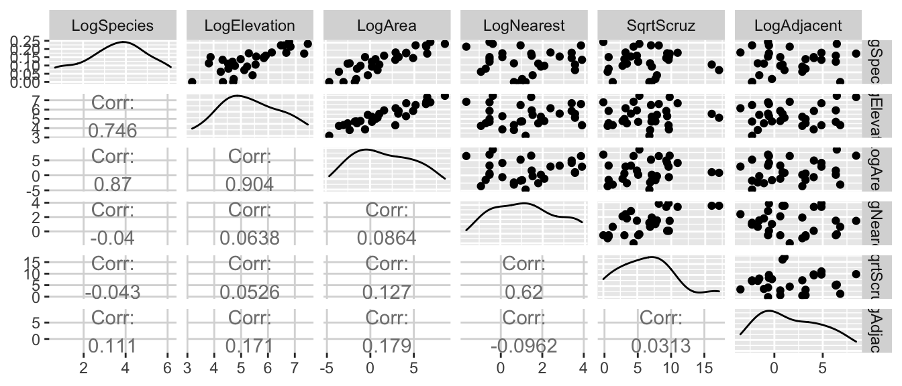
Now our residual plot versus fitted values does not show any trend, suggesting that the quadratic model is fitting the data well. Graphing the original data along with the predicted values confirms this.
# add the fitted and CI lwr/upr columns to my dataset
Eggs <- Eggs %>%
dplyr::do(if(!is.null(.$fit)){dplyr::select(-fit,-upr,-lwr )}else{.}) %>%
cbind( predict(model, interval='confidence') )
ggplot(Eggs, aes(x=carapace)) +
geom_ribbon( aes(ymin=lwr, ymax=upr), fill='red', alpha=.3) +
geom_line(aes(y=fit), color='red') +
geom_point(aes(y=clutch.size)) 
10.1.2.1.2 Heteroskedasticity
The plot of residuals versus fitted values can detect heteroskedasticity (non-constant variance) in the error terms.
To illustrate this, we turn to another dataset in the Faraway book. The dataset airquality uses data taken from an environmental study that measured four variables, ozone, solar radiation, temperature and wind speed for 153 consecutive days in New York. The goal is to predict the level of ozone using the weather variables.
We first graph all pairs of variables in the dataset.
data(airquality)
pairs(~ Ozone + Solar.R + Wind + Temp, data=airquality)
and notice that ozone levels are positively correlated with solar radiation and temperature, and negatively correlated with wind speed. A linear relationship with wind might be suspect as is the increasing variability in the response to high temperature. However, we don’t know if those trends will remain after fitting the model, because there is some covariance among the predictors.
model <- lm(Ozone ~ Solar.R + Wind + Temp, data=airquality)
autoplot(model, which=1) 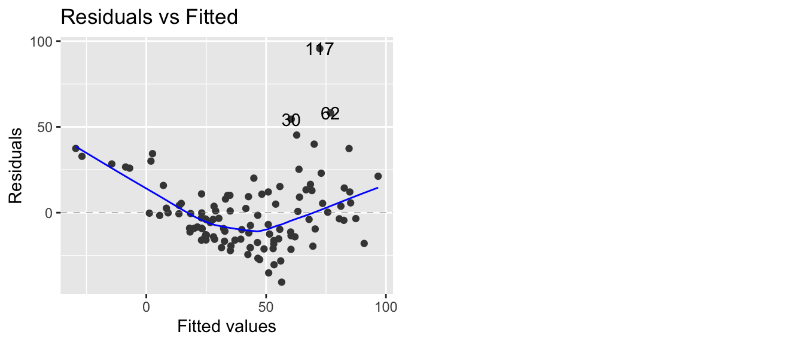
As we feared, we have both a non-constant variance and a non-linear relationship. A transformation of the \(y\) variable might be able to fix our problem.
10.1.2.2 QQplots
If we are taking a sample of size \(n=10\) from a standard normal distribution, then I should expect that the smallest observation will be negative. Intuitively, you would expect the smallest observation to be near the \(10\)th percentile of the standard normal, and likewise the second smallest should be near the \(20\)th percentile.
This idea needs a little modification because the largest observation cannot be near the \(100\)th percentile (because that is \(\infty\)). So we’ll adjust the estimates to still be spaced at \((1/n)\) quantile increments, but starting at the \(0.5/n\) quantile instead of the \(1/n\) quantile. So the smallest observation should be near the \(0.05\) quantile, the second smallest should be near the \(0.15\) quantile, and the largest observation should be near the \(0.95\) quantile. I will refer to these as the theoretical quantiles.
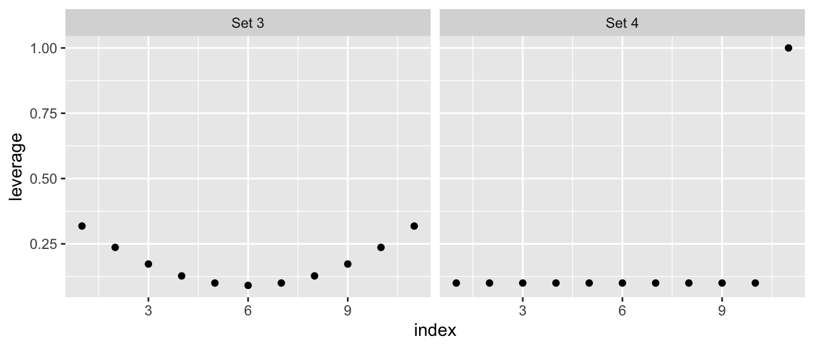
I can then graph the theoretical quantiles vs my observed values and if they lie on the 1-to-1 line, then my data comes from a standard normal distribution.
set.seed(93516) # make random sample in the next code chunk consistant run-to-run
n <- 10
data <- data.frame( observed = rnorm(n, mean=0, sd=1) ) %>%
arrange(observed) %>%
mutate( theoretical = qnorm( (1:n -.5)/n ) )
ggplot(data, aes(x=theoretical, y=observed) ) +
geom_point() +
geom_abline( intercept=0, slope=1, linetype=2, alpha=.7) +
labs(main='Q-Q Plot: Observed vs Normal Distribution')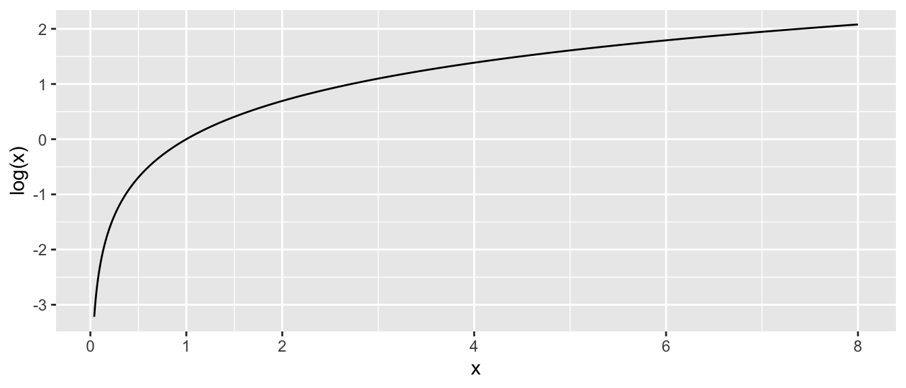
In the context of a regression model, we wish to look at the residuals and see if there are obvious departures from normality. Returning to the air quality example, R will calculate the qqplot for us.
model <- lm(Ozone ~ Solar.R + Wind + Temp, data=airquality)
autoplot(model, which=2) 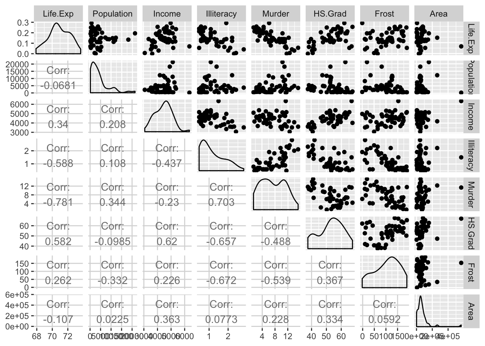
In this case, we have a large number of residuals that are bigger than I would expect them to be based on them being from a normal distribution. We could further test this using the Shapiro-Wilks test and compare the standardized residuals against a \(N\left(0,1\right)\) distribution.
shapiro.test( rstandard(model) )##
## Shapiro-Wilk normality test
##
## data: rstandard(model)
## W = 0.9151, p-value = 2.819e-06The tail of the distribution of observed residuals is far from what we expect to see.
10.1.2.3 Scale-Location Plot
This plot is a variation on the fitted vs residuals plot, but the y-axis uses the square root of the absolute value of the standardized residuals. Supposedly this makes detecting increasing variance easier to detect, but I’m not convinced.
10.1.2.4 Residuals vs Leverage (plus Cook’s Distance)
This plot lets the user examine the which observations have a high potential for being influential (i.e. high leverage) versus how large the residual is. Because Cook’s distance is a function of those two traits, we can also divide the graph up into regions by the value of Cook’s Distance.
Returning to Anscombe’s third set of data, we see
<<>>=
model3 <- lm(y ~ x, data=Set3)
autoplot(model3, which=5)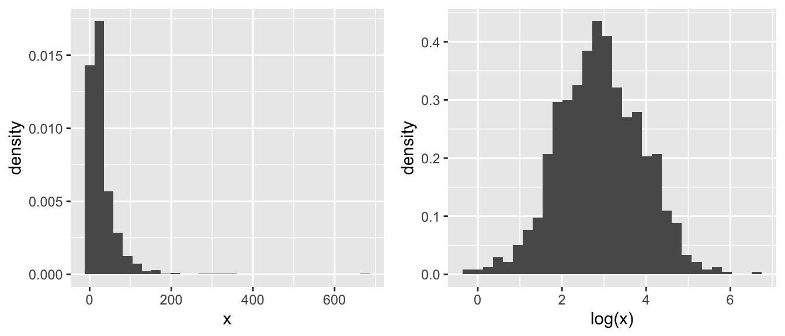
that one data point (observation 10) has an extremely large standardized residual. This is one plot where I prefer what the base graphics in R does compared to the ggfortify version. The base version of R adds some contour lines that mark where the contours of where Cook’s distance is 1/2 and 1.
plot(model3, which=5)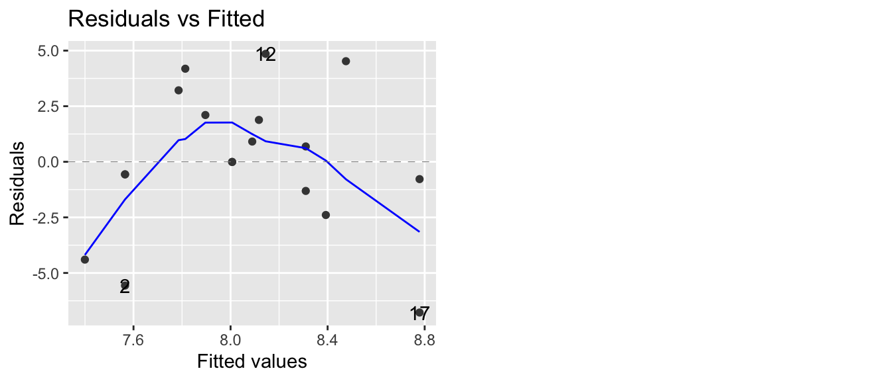
10.2 Transformations
Transformations of the response variable and/or the predictor variables can drastically improve the model fit and can correct violations of the model assumptions. We might also create new predictor variables that are functions of existing variables. These include quadratic and higher order polynomial terms and interaction terms.
Often we are presented with data and we would like to fit a linear model to the data. Unfortunately the data might not satisfy all of the assumptions of a linear model. For the simple linear model \[y_i=\beta_{0}+\beta_{1}x_i+\epsilon_i\] where \(\epsilon_i \stackrel{iid}{\sim} N\left(0,\sigma^{2}\right)\), the necessary assumptions are:
- Independent errors
- Errors have constant variance, no matter what the x-value (or equivalently the fitted value)
- Errors are normally distributed
- The model contains all the appropriate covariates and no more.
In general, a transformation of the response variable can be used to address the 2nd and 3rd assumptions, and adding new covariates to the model will be how to address deficiencies of assumption 4.
10.2.1 A review of \(\log(x)\) and \(e^x\)
One of the most common transformations that is used on either the response \(y\) or the covariates \(x\) is the \(\log()\) function. In this next section we will consider \(\log()\) with base \(e\). However, if you prefer \(\log_2()\) or \(\log_{10}\) you may substitute \(e\) with \(2\) or \(10\) everywhere.
In primary school you might have learned that the \(\log()\) function looks like this:

Critical aspects to notice about \(\log(x)\):
- As \(x \to 0\), \(\log(x) \to -\infty\).
- At \(x=1\) we have \(log(x=1) = 0\).
- As \(x \to \infty\), \(\log(x) \to \infty\) as well, but at a much slower rate.
- Even though \(log(x)\) is only defined for \(x>0\), the result can take on any real value, positive or negative.
The inverse function of \(\log(x)\) is \(e^x = \exp(x)\), where \(e=2.71828\dots\) which looks like this: 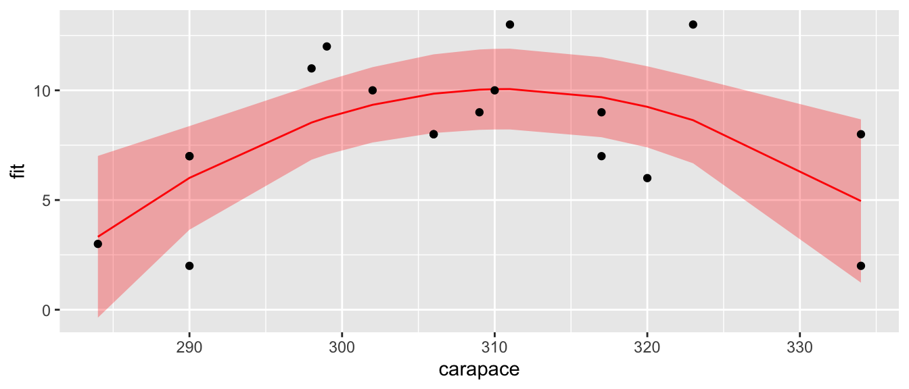
Critical aspects to notice about \(e^x\):
- as \(x \to -\infty\), \(e^x \to 0\).
- At \(x =0\) we have \(e^0 = 1\).
- as \(x \to \infty\), \(e^x \to \infty\) as well, but at a much faster rate.
- The function \(e^x\) can be evaluated for any real number, but the result is always \(>0\).
Finally we have that \(e^x\) and \(log(x)\) are inverse functions of each other by the following identity: \[x = \log\left( e^x \right )\] and \[x = e^{\log(x)} \;\;\; \textrm{ if } x >0\]
The reason we like using a \(\log()\) transformation is that it acts differentially on large values than small. In particular for \(x >1\) we have that \(\log(x)\) makes all of the smaller, but the transformation on big values of \(x\) is more extreme. Consider the following, where most of the x-values are small, but we have a few that are quite large. Those large values will have extremely high leverage and we’d like to reduce that.

10.2.2 Transforming the Response
When the normality or constant variance assumption is violated, sometimes it is possible to transform the response to satisfy the assumption. Often times count data is analyzed as log(count) and weights are analyzed after taking a square root or cube root transform. Statistics involving income or other monetary values are usually analyzed on the log scale so as to reduce the leverage of high income observations.
While we may want to transform the response in order to satisfy the statistical assumptions, it is often necessary to back-transform to the original scale. For example if we fit a linear model for income (\(y\)) based on the amount of schooling the individual has received (\(x\)) \[\log y=\beta_{0}+\beta_{1}x+\epsilon\] then we might want to give a prediction interval for an \(x_{0}\) value. The predicted \(log(income)\) value is \[\log\left(\hat{y}_{0}\right)=\hat{\beta}_{0}+\hat{\beta}_{x}x_{0}\] and we could calculate the appropriate predicted income as \(\hat{y}_{0}=e^{log\left(\hat{y}_{0}\right)}\). Likewise if we had a confidence interval or prediction interval for \(\log\left(\hat{y}_{0}\right)\) of the form \(\left(l,u\right)\) then the appropriate interval for \(\hat{y}_{0}\) is \(\left(e^{l},e^{u}\right)\). Notice that while \(\left(l,u\right)\) might be symmetric about \(\log\left(\hat{y}_{0}\right)\), the back-transformed interval is not symmetric about \(\hat{y}_{0}\).
Unfortunately the interpretation of the regression coefficients \(\hat{\beta}_{0}\) and \(\hat{\beta}_{1}\) on the untransformed scale becomes more complicated. This is a very serious difficulty and might sway a researcher from transforming their data.
10.2.2.1 Box-Cox Family of Transformations
The Box-Cox method is a popular way of determining what transformation to make. It is intended for responses that are strictly positive (because \(\log0=-\infty\) and the square root of a number gives complex numbers, which we don’t know how to address in regression). The transformation is defined as \[g\left(y\right)=\begin{cases} \frac{y^{\lambda}-1}{\lambda} & \lambda\ne0\\ \log y & \lambda=0 \end{cases}\] This transformation is a smooth family of transformations because \[\lim_{\lambda\to0}\frac{y^{\lambda}-1}{\lambda}=\log y\] In the case that \(\lambda\ne 0\), then a researcher will usually use the simpler transformation \(y^{\lambda}\) because the subtraction and division does not change anything in a non-linear fashion. Thus for purposes of addressing the assumption violations, all we care about is the \(y^{\lambda}\) and prefer the simpler (i.e. more interpretable) transformation.
Finding the best transformation can be done by adding the \(\lambda\) parameter to the model and finding the value that maximizes the log-likelihood function. Fortunately, we don’t have to do this by hand, as the function boxcox() in the MASS library will do all the heavy calculation for us.
data(gala, package='faraway')
g <- lm(Species ~ Area + Elevation + Nearest + Scruz + Adjacent, data=gala)
# I don't like loading the MASS package because it includes a select() function
# that fights with dplyr::select(), so whenever I use a function in the MASS
# package, I just call it using the package::function() naming.
#
# #MASS::boxcox(g, lambda=seq(-2,2, by=.1)) # Set lambda range manually...
MASS::boxcox( g ) # With default lambda range.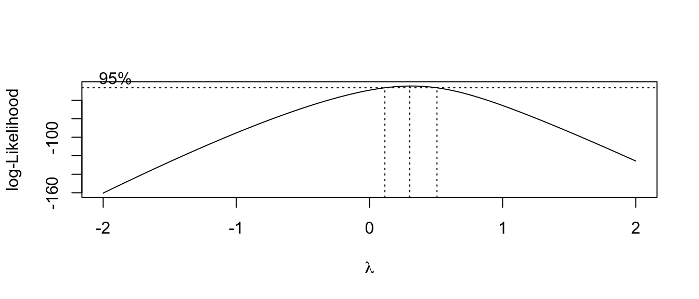
The optimal transformation for these data would be \(y^{1/4}=\sqrt[4]{y}\) but that is an extremely uncommon transformation. Instead we should pick the nearest “standard” transformation which would suggest that we should use either the \(\log y\) or \(\sqrt{y}\) transformation.
Thoughts on the Box-Cox transformation:
- In general, I prefer to using a larger-than-optimal model when picking a transformation and then go about the model building process. After a suitable model has been chosen, I’ll double check the my transformation was appropriate given the model that I ended up with.
- Outliers can have a profound effect on this method. If the “optimal” transformation is extreme (\(\lambda=5\) or something silly) then you might have to remove the outliers and refit the transformation.
- If the range of the response \(y\) is small, then the method is not as sensitive.
- These are not the only possible transformations. For example, for binary data, the
logitandprobittransformations are common. In classical non-parametric statistics, we take a rank transformation to the y-values.
10.2.3 Transforming the predictors
10.2.3.1 Polynomials of a predictor
Perhaps the most common transformation to make is to make a quadratic function in \(x\). Often the relationship between \(x\) and \(y\) follows a curve and we want to fit a quadratic model \[\hat{y}=\hat{\beta}_{0}+\hat{\beta}_{1}x+\hat{\beta}_{2}x^{2}\] and we should note that this is still a linear model because \(\hat{y}\) is a linear function of \(x\) and \(x^{2}\). As we have already seen, it is easy to fit the model. Adding the column of \(x^{2}\) values to the design matrix does the trick.
The difficult part comes in the interpretation of the parameter values. No longer is \(\hat{\beta}_{1}\) the increase in \(y\) for every one unit increase in \(x\). Instead the three parameters in my model interact in a complicated fashion. For example, the peak of the parabola is at \(-\hat{\beta}_{1}/2\hat{\beta}_{2}\) and whether the parabola is cup shaped vs dome shaped and its steepness is controlled by \(\hat{\beta}_{2}\). Because my geometric understanding of degree \(q\) polynomials relies on have all factors of degree \(q\) or lower, whenever I include a covariate raised to a power, I should include all the lower powers as well.
10.2.3.2 Log and Square Root of a predictor
Often the effect of a covariate is not linearly related to response, but rather some function of the covariate. For example the area of a circle is not linearly related to its radius, but it is linearly related to the radius squared. \[Area=\pi r^{2}\] Similar situations might arise in biological settings, such as the volume of conducting tissue being related to the square of the diameter. Or perhaps an animals metabolic requirements are related to some power of body length. In sociology, it is often seen that the utility of, say, $1000 drops off in a logarithmic fashion according to the person’s income. To a graduate student, $1K is a big deal, but to a corporate CEO, $1K is just another weekend at the track. Making a log transformation on any monetary covariate, might account for the non-linear nature of “utility”.
Picking a good transformation for a covariate is quite difficult, but most fields of study have spent plenty of time thinking about these issues. When in doubt, look at scatter plots of the covariate vs the response and ask what transformation would make the data fall onto a line?
10.2.3.3 Examples of transformation of predictors
To illustrate how to add a transformation of a predictor to a linear model in R, we will consider the Galapagos data in faraway.
data('gala', package='faraway')
# look at all the scatterplots
gala %>%
mutate(LogSpecies = log(Species)) %>%
dplyr::select(LogSpecies, Area, Elevation, Nearest, Scruz, Adjacent) %>%
GGally::ggpairs(upper=list(continuous='points'), lower=list(continuous='cor'))
Looking at these graphs, I think I should definately transform Area and Adjacent, and I wouldn’t object to doing the same to Elevation, Nearest and Scruz. Given the high leverages, a log transformation should be a good idea. One problem is that \(\log(0) = -\infty\). A quick look at the data set summary:
gala %>%
dplyr::select(Species, Area, Elevation, Nearest,Scruz, Adjacent) %>%
summary()## Species Area Elevation Nearest
## Min. : 2.00 Min. : 0.010 Min. : 25.00 Min. : 0.20
## 1st Qu.: 13.00 1st Qu.: 0.258 1st Qu.: 97.75 1st Qu.: 0.80
## Median : 42.00 Median : 2.590 Median : 192.00 Median : 3.05
## Mean : 85.23 Mean : 261.709 Mean : 368.03 Mean :10.06
## 3rd Qu.: 96.00 3rd Qu.: 59.237 3rd Qu.: 435.25 3rd Qu.:10.03
## Max. :444.00 Max. :4669.320 Max. :1707.00 Max. :47.40
## Scruz Adjacent
## Min. : 0.00 Min. : 0.03
## 1st Qu.: 11.03 1st Qu.: 0.52
## Median : 46.65 Median : 2.59
## Mean : 56.98 Mean : 261.10
## 3rd Qu.: 81.08 3rd Qu.: 59.24
## Max. :290.20 Max. :4669.32reveals that Scruz has a zero value, and so a log transformation will result in a \(-\infty\). So, lets take the square root of Scruz
gala %>%
mutate(LogSpecies = log(Species), LogElevation=log(Elevation), LogArea=log(Area), LogNearest=log(Nearest),
SqrtScruz=sqrt(Scruz), LogAdjacent=log(Adjacent)) %>%
dplyr::select(LogSpecies, LogElevation, LogArea, LogNearest, SqrtScruz, LogAdjacent) %>%
GGally::ggpairs(upper=list(continuous='points'), lower=list(continuous='cor'))
Looking at these graphs, it is clear that log(Elevation) and log(Area) are highly correlated and we should probably have one or the other, but not both in the model.
m.c <- lm(log(Species) ~ log(Area) + log(Nearest) + sqrt(Scruz) + log(Adjacent), data=gala)
summary(m.c)$coefficients %>% round(digits=3) # more readable...## Estimate Std. Error t value Pr(>|t|)
## (Intercept) 3.285 0.275 11.960 0.000
## log(Area) 0.402 0.043 9.443 0.000
## log(Nearest) -0.041 0.118 -0.351 0.728
## sqrt(Scruz) -0.049 0.045 -1.085 0.288
## log(Adjacent) -0.024 0.046 -0.529 0.602We will remove all the parameters that appear to be superfluous, and perform an F-test to confirm that the simple model is sufficient.
m.s <- lm(log(Species) ~ log(Area), data=gala)
anova(m.s, m.c)## Analysis of Variance Table
##
## Model 1: log(Species) ~ log(Area)
## Model 2: log(Species) ~ log(Area) + log(Nearest) + sqrt(Scruz) + log(Adjacent)
## Res.Df RSS Df Sum of Sq F Pr(>F)
## 1 28 17.218
## 2 25 15.299 3 1.9196 1.0456 0.3897Next we will look at the coefficients.
summary(m.s)##
## Call:
## lm(formula = log(Species) ~ log(Area), data = gala)
##
## Residuals:
## Min 1Q Median 3Q Max
## -1.5442 -0.4001 0.0941 0.5449 1.3752
##
## Coefficients:
## Estimate Std. Error t value Pr(>|t|)
## (Intercept) 2.9037 0.1571 18.484 < 2e-16 ***
## log(Area) 0.3886 0.0416 9.342 4.23e-10 ***
## ---
## Signif. codes: 0 '***' 0.001 '**' 0.01 '*' 0.05 '.' 0.1 ' ' 1
##
## Residual standard error: 0.7842 on 28 degrees of freedom
## Multiple R-squared: 0.7571, Adjusted R-squared: 0.7484
## F-statistic: 87.27 on 1 and 28 DF, p-value: 4.23e-10The slope coefficient (0.3886) is the increase in log(Species) for every 1 unit increase in log(Area). Unfortunately that is not particularly convenient to interpretation and we will address this in the next section of this chapter.
Finally, we might be interested in creating a confidence interval for the expected number of tortoise species for an island with Area=50.
x0 <- data.frame(Area=50)
log.Species.CI <- predict(m.s, newdata=x0, interval='confidence')
log.Species.CI # Log(Species) scale## fit lwr upr
## 1 4.423903 4.068412 4.779394exp(log.Species.CI) # Species scale## fit lwr upr
## 1 83.42122 58.46403 119.0322Notice that on the species-scale, we see that the fitted value is not in the center of the confidence interval.
To help us understand what the log transformations are doing, we can produce a plot with the island Area on the x-axis and the expected number of Species on the y-axis and hopefully that will help us understand the relationship between the two.
library(ggplot2)
pred.data <- data.frame(Area=1:50)
pred.data <- pred.data %>%
cbind( predict(m.s, newdata=pred.data, interval='conf'))
ggplot(pred.data, aes(x=Area)) +
geom_line(aes(y=exp(fit))) +
geom_ribbon(aes(ymin=exp(lwr), ymax=exp(upr)), alpha=.2) +
ylab('Number of Species')
10.2.4 Interpretation of log transformed variables
One of the most difficult issues surrounding transformed variables is that the interpretation is difficult. Here we look at the interpretation of log transformed variables.
To begin with, we need to remind ourselves of what the functions \(\log x\) and \(e^{x}\) look like.

In particular we notice that \[e^{0}=1\] and \[\log\left(1\right)=0\] and the functions \(e^{x}\) and \(\log x\) are inverse functions of each other.
\[e^{\log x}=\log\left(e^{x}\right)=x\]
Also it is important to note that the \(\log\) function has some interesting properties in that it makes operations “1-operation easier”. \[\begin{aligned} \log\left(a^{b}\right) &= b\log a \\ \log\left(\frac{a}{b}\right) &= \log a-\log b \\ \log\left(ab\right) &= \log a+\log b \end{aligned}\]
One final aspect of exponents that we will utilize is that \[ e^{a+b} = e^a e^b\]
To investigate the effects of a log transformation, we’ll examine a dataset that predicts the writing scores of \(n=200\) students using the gender, reading and math scores. This example was taken from the UCLA Statistical Consulting Group.
file <- 'https://stats.idre.ucla.edu/wp-content/uploads/2016/02/lgtrans.csv' # on the web
file <- 'data-raw/lgtrans.csv' # on my laptop
scores <- read.csv(file=file)
scores <- scores %>% rename(gender = female)
scores %>%
dplyr::select(write, read, math, gender) %>%
GGally::ggpairs( aes(color=gender),
upper=list(continuous='points'), lower=list(continuous='cor'))## `stat_bin()` using `bins = 30`. Pick better value with `binwidth`.
## `stat_bin()` using `bins = 30`. Pick better value with `binwidth`.
## `stat_bin()` using `bins = 30`. Pick better value with `binwidth`.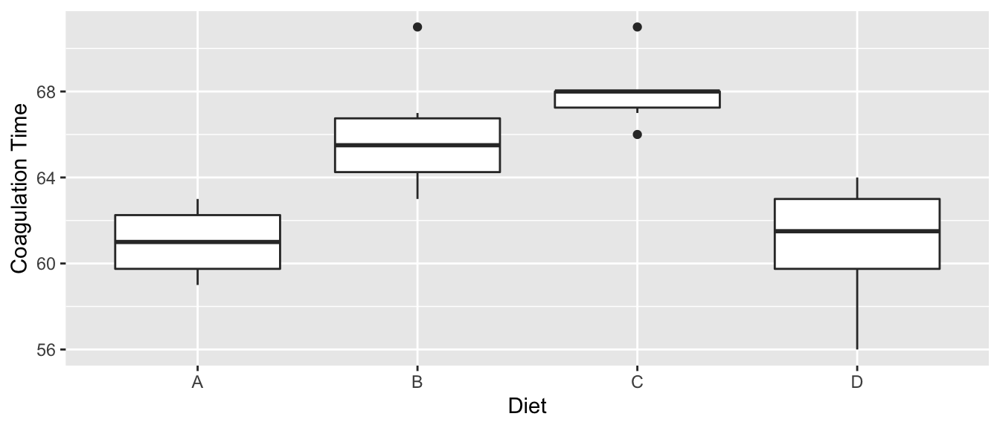
These data look pretty decent, and I’m not certain that I would do any transformation, but for the sake of having a concrete example that has both continuous and categorical covariates, we will interpret effects on a students’ writing score.
10.2.4.1 Log-transformed response, un-transformed covariates
We consider the model where we have transformed the response variable and just an intercept term. \[\log y=\beta_{0}+\epsilon\]
m <- lm(log(write) ~ 1, data=scores)
summary(m)$coef %>% round(digits=3)## Estimate Std. Error t value Pr(>|t|)
## (Intercept) 3.948 0.014 288.402 0We interpret the intercept as the mean of the log-transformed response values. We could back transform this to the original scale \(\hat{y} = e^{\hat{\beta}_{0}} = e^{3.948} = 51.83\) as a typical value of write. To distinguish this from the usually defined mean of the write values, we will call this as the geometric mean.
Next we examine how to interpret the model when a categorical variable is added to the model. \[\log y=\begin{cases} \beta_{0}+\epsilon & \;\;\textrm{if female}\\ \beta_{0}+\beta_{1}+\epsilon & \;\;\textrm{if male} \end{cases}\]
m <- lm(log(write) ~ gender, data=scores)
summary(m)$coef %>% round(digits=3)## Estimate Std. Error t value Pr(>|t|)
## (Intercept) 3.995 0.018 222.949 0
## gendermale -0.103 0.027 -3.887 0The intercept is now the mean of the log-transformed write responses for the females and thus \(e^{\hat{\beta}_0} = \hat{y}_{f}\) and the offset for males is the change in log(write) from the female group. Notice that for the males, we have
\[\begin{aligned}
\log\hat{y}_m &= \hat{\beta}_{0}+\hat{\beta}_{1} \\
\hat{y}_m &= e^{\hat{\beta}_{0}+\hat{\beta}_{1}} \\
&= \underset{\hat{y}_{f}}{\underbrace{e^{\hat{\beta}_{0}}}}\;\;\;\;\;\underset{\textrm{multiplier for males}}{*\;\;\underbrace{e^{\hat{\beta}_{1}}}}
\end{aligned}\]
and therefore we see that males tend to have writing scores \(e^{-0.103}=0.90=90\%\) of the females. Typically this sort of result would be reported as the males have a 10% lower writing score than the females.
The model with a continuous covariate has a similar interpretation. \[\log y=\begin{cases} \beta_{0}+\beta_{2}x+\epsilon & \;\;\textrm{if female}\\ \beta_{0}+\beta_{1}+\beta_{2}x+\epsilon & \;\;\textrm{if male} \end{cases}\]
We will use the reading score read to predict the writing score. Then \(\hat{\beta}_{2}\) is the predicted increase in log(write) for every 1-unit increase in read score. The interpretation of \(\hat{\beta}_{0}\) is now \(\log\hat{y}\) when \(x=0\) and therefore \(\hat{y}=e^{\hat{\beta}_{0}}\) when \(x=0\).
m <- lm(log(write) ~ gender + read, data=scores) # main effects model
summary(m)$coefficients %>% round(digits=3)## Estimate Std. Error t value Pr(>|t|)
## (Intercept) 3.412 0.055 62.452 0
## gendermale -0.116 0.021 -5.516 0
## read 0.011 0.001 11.057 0For females, we consider the difference in \(\log\hat{y}\) for a 1-unit increase in \(x\) and will interpret this on the original write scale. \[\begin{aligned} \log\hat{y}_f &= \hat{\beta}_{0}+\hat{\beta}_{2}x \\ \hat{y}_f &= e^{\hat{\beta}_{0}+\hat{\beta}_{2}x} \end{aligned}\] therefore we consider \(e^{\hat{\beta}_{2}}\) as the multiplicative increase in write score for a 1-unit increase in \(x\) because of the following. Consider \(x_1\) and \(x_2 = x_1 +1\). Then we consider the ratio of predicted values: \[ \frac{\hat{y}_2}{\hat{y}_1} = \frac{e^{\hat{\beta}_{0}+\hat{\beta}_{2}\,\left(x+1\right)}}{e^{\hat{\beta}_{0}+\hat{\beta}_{2}\,x}} = \frac{e^{\hat{\beta}_{0}}e^{\hat{\beta}_{2}\,x}e^{\hat{\beta}_{2}}}{e^{\hat{\beta}_{0}}e^{\hat{\beta}_{2}\,x}} = e^{\hat{\beta}_{2}} \]
For our writing scores example we have that \(e^{\hat{\beta}_{2}}=e^{0.011}=1.01\)
meaning there is an estimated \(1\%\) increase in write score for every 1-point increase in read score.
If we are interested in, say, a 20-unit increase in \(x\), then that would result in an increase of
\[\frac{e^{\hat{\beta}_{0} + \hat{\beta}_{2} \, \left(x+20\right)}} {e^{\hat{\beta}_{0}+\hat{\beta}_{2} \, x}} =\frac{e^{\hat{\beta}_{0}} e^{\hat{\beta}_{2}\,x} e^{20\hat{\beta}_{2}}}{e^{\hat{\beta}_{0}} e^{\hat{\beta}_{2} \, x}} = e^{20\hat{\beta}_{2}} = \left( e^{\hat{\beta}_{2}} \right)^{20}\]
and for the writing scores we have \[e^{20\hat{\beta}_{2}} = \left( e^{\hat{\beta}_{2}} \right)^{20}=1.01^{20} = 1.22\] or a 22% increase in writing score for a 20-point increase in reading score.
In short, we can interpret \(e^{\hat{\beta}_{i}}\) as the multiplicative increase/decrease in the non-transformed response variable. Some students get confused by what is meant by a \(\%\) increase or decrease in \(y\).
- A \(75\%\) decrease in \(y\) has a resulting value of \(\left(1-0.75\right)y=\left(0.25\right) y\)
- A \(75\%\) increase in \(y\) has a resulting value of \(\left(1+0.75\right)y=\left(1.75\right) y\)
- A \(100\%\) increase in \(y\) has a resulting value of \(\left(1+1.00\right)y=2x\) and is a doubling of \(y\).
- A \(50\%\) decrease in \(y\) has a resulting value of \(\left(1-0.5\right)y=\left(0.5\right) x\) and is a halving of \(y\).
10.2.4.2 Un-transformed response, log-transformed covariate
We consider the model \[y=\beta_{0}+\beta_{2}\log x+\epsilon\] and consider two different values of \(x\) (which we’ll call \(x_{1}\) and \(x_{2}\) and we are considering the effect of moving from \(x_{1}\) to \(x_{2}\)) and look at the differences between the predicted values \(\hat{y}_2 - \hat{y}_1\).
\[\begin{aligned} \hat{y}_{2}-\hat{y}_{1} & = \left[\hat{\beta}_{0}+\hat{\beta}_{2}\log x_{2}\right]-\left[\hat{\beta}_{0}+\hat{\beta}_{2}\log x_{1}\right] \\ & = \hat{\beta}_{2}\left[\log x_{2}-\log x_{1}\right] \\ & = \hat{\beta}_{2}\log\left[\frac{x_{2}}{x_{1}}\right] \end{aligned}\]
This means that so long as the ratio between the two x-values is constant, then the change in \(\hat{y}\) is the same. So doubling the value of \(x\) from 1 to 2 has the same effect on \(\hat{y}\) as changing x from 50 to 100.
m <- lm( write ~ gender + log(read), data=scores)
summary(m)$coefficients %>% round(digits=3)## Estimate Std. Error t value Pr(>|t|)
## (Intercept) -59.076 9.948 -5.938 0
## gendermale -5.431 1.013 -5.362 0
## log(read) 29.045 2.527 11.493 0# predict writing scores for three females,
# each with a reading score 50% larger than the other previous
predict(m, newdata=data.frame(gender=rep('female',3),
read=c(40, 60, 90)))## 1 2 3
## 48.06622 59.84279 71.61936We should see a
\[29.045 \; \log \left( 1.5 \right) = 11.78\]
difference in \(\hat{y}\) values for the first and second students and the second and third.
10.2.4.3 Log-transformed response, log-transformed covariate
This combines the interpretations in the previous two sections. We consider \[\log y=\beta_{0}+\beta_{2}\log x+\epsilon\] and we again consider two \(x\) values (again \(x_{1}\) and \(x_{2}\)). We then examine the difference in the \(\log\hat{y}\) values as \[\begin{aligned} \log\hat{y}_{2}-\log\hat{y}_{1} &= \left[\hat{\beta}_{0}+\hat{\beta}_{2}\log x_{2}\right]-\left[\hat{\beta}_{0}+\hat{\beta}_{2}\log x_{1}\right] \\ \log\left[\frac{\hat{y}_{2}}{\hat{y}_{1}}\right] &= \hat{\beta}_{2}\log\left[\frac{x_{2}}{x_{1}}\right] \\ \log\left[\frac{\hat{y}_{2}}{\hat{y}_{1}}\right] &= \log\left[\left(\frac{x_{2}}{x_{1}}\right)^{\hat{\beta}_{2}}\right] \\ \frac{\hat{y}_{2}}{\hat{y}_{1}} &= \left(\frac{x_{2}}{x_{1}}\right)^{\hat{\beta}_{2}} \end{aligned}\]
This allows us to examine the effect of some arbitrary percentage increase in \(x\) value as a percentage increase in \(y\) value.
m <- lm(log(write) ~ gender + log(read), data=scores)
summary(m)$coefficients %>% round(digits=3)## Estimate Std. Error t value Pr(>|t|)
## (Intercept) 1.714 0.205 8.358 0
## gendermale -0.114 0.021 -5.483 0
## log(read) 0.581 0.052 11.148 0which implies for a \(10\)% increase in read score, we should see a \(1.10^{0.581}=1.05\) multiplier in write score. That is to say, a \(10\%\) increase in reading score results in a \(5\%\) increase in writing score.
For the Galapagos islands, we had
m.s <- lm(log(Species) ~ log(Area), data=gala)
summary(m.s)$coefficients %>% round(digits=3)## Estimate Std. Error t value Pr(>|t|)
## (Intercept) 2.904 0.157 18.484 0
## log(Area) 0.389 0.042 9.342 0and therefore doubling of Area (i.e. the ratio of the \(Area_{2} / Area_{1} = 2\)) results in a \(2^{0.389}=1.31\) multiplier of the Species value. That is to say doubling the island area increases the number of species by \(31\%\).
In the table below \(\beta\) represents the group offset value, or the slope value associated with \(x\). If we are in a model with multiple slopes such as an ANCOVA model, then the beta term represents the slope of whatever group you are interested.
| Response | Explanatory | Term | Interpretation |
|---|---|---|---|
| \(\log(y)\) | Categorical | \(e^\beta\) | Switching from the reference group results in this multiplicative change on \(y\). |
| \(\log(y)\) | Continuous \(x\) | \(e^\beta\) | A 1-unit change in \(x\) results in this multiplicative change on \(y\). |
| \(\log(y)\) | Continuous \(x\) | \(\left(e^\beta\right)^\delta\) | A \(\delta\)-unit change in \(x\) results in this multiplicative change on \(y\). |
| \(y\) | Continuous \(\log(x)\) | \(\beta \, \log\left(\frac{x_2}{x_1}\right)\) | The proportional change in \(x\) results in an additive change on \(y\). |
| \(\log(y)\) | Continuous \(\log(x)\) | \(\left(\frac{x_2}{x_1}\right)^\beta\) | The proportional change in \(x\) results in the multiplicative change on \(y\). |
10.3 Exercises
- The dataset
infmortin thefarawaypackage has information about infant mortality from countries around the world. Be aware that this is a old data set and does not necessarily reflect current conditions. More information about the dataset can be found using?faraway::infmort. We will be interested in understanding how infant mortality is predicted by per capita income, world region, and oil export status.Plot the relationship between income and mortality. This can be done using the command
data('infmort', package='faraway') pairs(mortality ~., data=infmort)What do you notice about the relationship between mortality and income?
Fit a linear model without any interaction terms with all three covariates as predictors of infant mortality. Examine the diagnostic plots. What stands out?
Use the
boxcox()function in the library MASS to determine a what a good transformation to the mortality response variable.Make a log transformation to the mortality variable and refit the model without interactions. Use the log transformed mortality for all further questions.
Examine the pairs plot with log(mortality), income, and log(income). Which should be used in our model,
incomeorlog(income)?Examine models that have all three main effects and either the
region:log(income)oroil:log(income)interaction. Are either interaction significant vs the model with just the three main effects? What about a model that contains both interactions (and the three main effects)?Interpret the effects of income, world region, and oil exports on log infant mortality based on these data. For the non-oil producing countries, quantify the effect of doubling the countries income on infant mortality. Hint: graph the data and the predicted values before doing anything else.
- Using the
pressuredata in thedatasetspackage, fit a model with pressure as the response and temperature as the predictor using transformations to obtain a good fit. Feel free to experiment with what might be considered a ridiculously complicated model with a high degree polynomial.- Document your process of building your final model. Do not show graphs or computer output that is not relevant to your decision or that you do not wish to comment on.
- Comment on the interpretability of your (possibly ridiculously complicated) model.
- Use transformations to find a good model for
volumein terms ofgirthandheightusing thetreesdataset in thedatasetspackage.- Document your process of building your final model. Again, only include output or graphs that are relevant to your decisions and include discussion about anything you include.
- Create a prediction interval for the volume of a tree with
girth=16andheight=70. Notice that if you have transformed your response variable in you model, you’ll have to back-transform to the original y-scale.
- For this problem, we will look at a manufacturing problem. We will investigate the relationship predicting the
Timetaken polishing a newly manufactured dish versus the dishDiameter(in inches),Type, andPrice.The data live in a package I have on GitHub. The following code will download the data package:
library(devtools) # You might need to load this package the usual way... install_github('dereksonderegger/dsData') # load an R package that lives on GitHub.Load the data and examine it using the commands
library(dsData) data('Dishes') str(Dishes) pairs(Time ~ ., data=Dishes)Comment on the relationships and possible transformations to be made.
Fit a linear model predicting
Timeas a function the main ofDiameter,Price, andType, but with no interaction.Examine the diagnostic plots. What stands out to you?
While most of the diagnostics look fine, there is weak evidence that there might be some heteroskedasticity. To address this (and provide an interesting model to interpret), refit your linear model but with a log-transformed Time and Price variables.
Using your model from part (e), what is your interpretation of the parameter associated with the Diameter variable on the original scale of the Time variable? Does this make sense to you considering the
pairs()plot?
How does a 20% increase in Price affect the polishing Time?
This is a stub chapter.